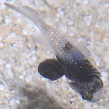
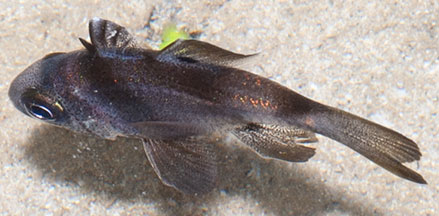
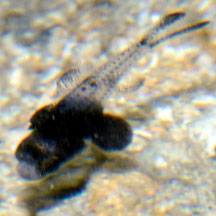
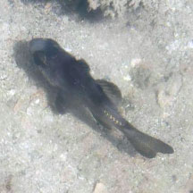

|
|
| fishes text index | photo index |
| Phylum Chordata > Subphylum Vertebrate > fishes > Family Apogonidae |
| Black
cardinalfish Apogonichthyoides melas Family Apogonidae updated Sep 2020 Where seen? This small black fish with rounded fins and tail is sometimes seen on our Southern shores, near living reefs. Elsewhere, it is seen in shallow well protected coastal bays, commonly found under jetties, hiding in dark areas, also in inshore rocky areas and among branching coral. It was previously known as Apogon melas. Features: To 10cm, those seen usually about 2-4cm. Body rounded with fins that are all rounded, including the tail fins. Whole body dark. Distinguished by a pale-edged dark spot at the base of the second dorsal fin. Tiny fish with a similar shape but only dark in the front portion, might they be juveniles? |
 Smaller, a juvenile? Labrador, Sep 09 |
 Dark spot at base of second dorsal fin. Pulau Senang, Aug 10 |
*Species are difficult to positively identify without close examination.
On this website, they are grouped by external features for convenience of display.
| Black cardinalfishes on Singapore shores |
On wildsingapore
flickr
|
| Other sightings on Singapore shores |
 Pulau Sekudu, May 25 Photo shared by Loh Kok Sheng on facebook. |
 Pulau Hantu, Dec 25 Photo shared by Mathias Luk on facebook. |
Links
|